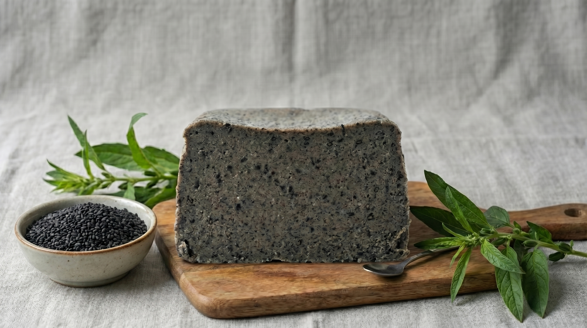
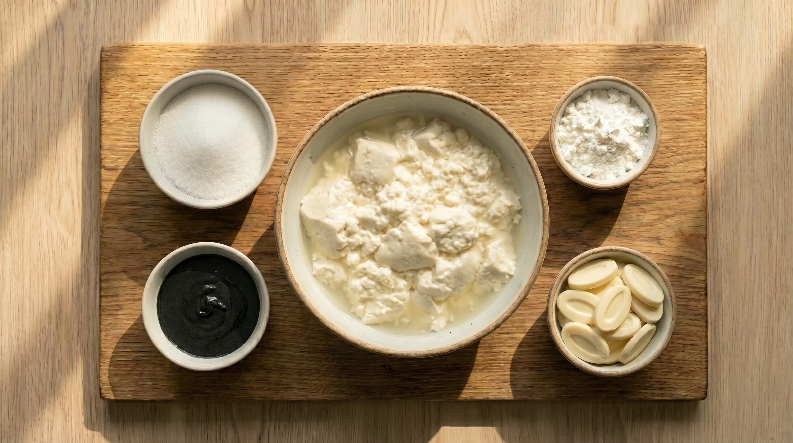
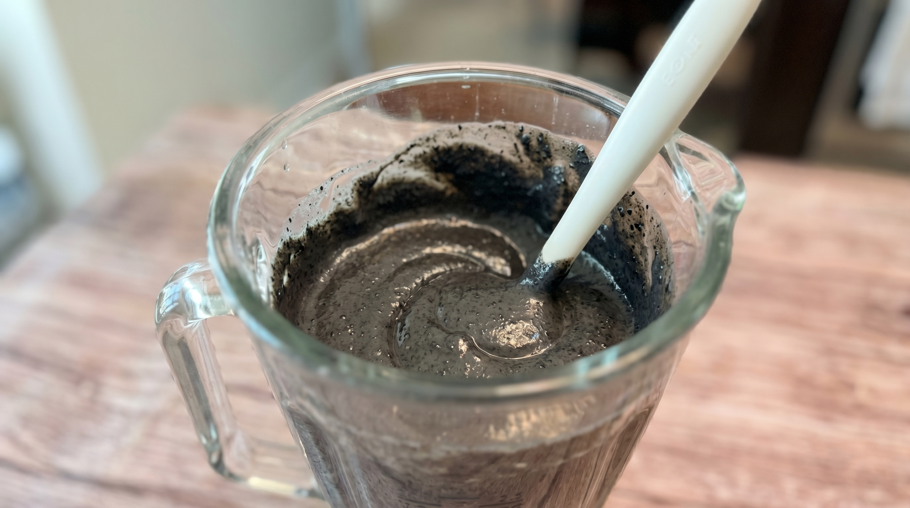
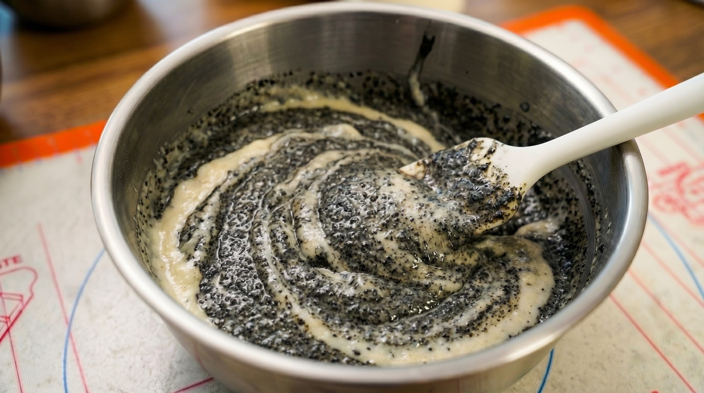
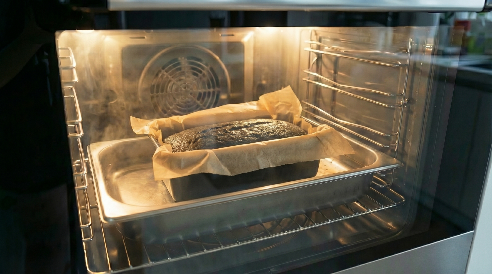
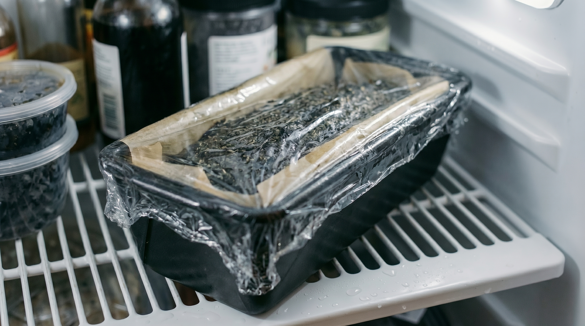
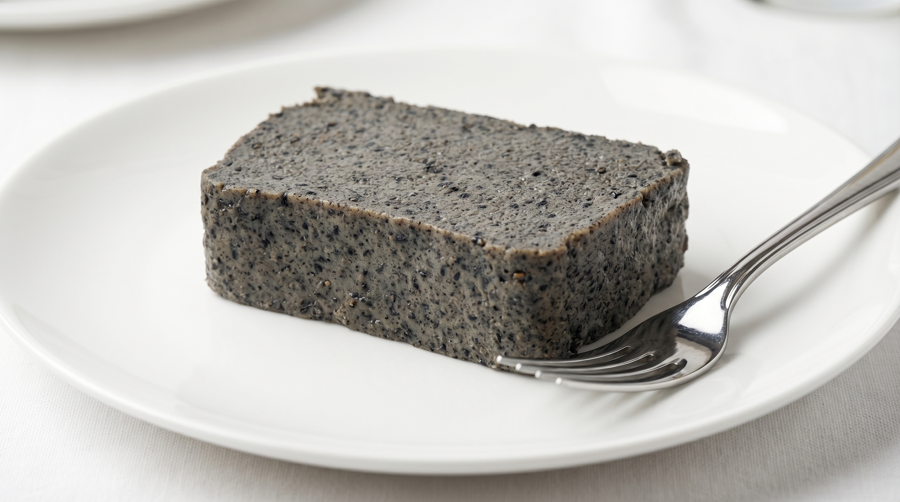

반전의 찰기,
검은 미학
빵보다 쫀득하고 푸딩보다 묵직한 반전의 식감.
순두부 한 봉의 수분을 그대로 머금은 고소한 기록입니다.

가장 정직한
조화의 배합
순두부, 흑임자 페이스트, 그리고 화이트 커버춰.
건강한 원재료들이 어우러져 깊은 만족감을 선사합니다.

Step 01.
완전한 유화
순두부와 흑임자를 입자 없이 곱게 가는 단계입니다.
실크처럼 매끄러운 광택이 날 때까지의 블렌딩이 핵심입니다.

Step 02.
부드러운 혼합
녹인 초콜릿과 전분을 더해 묵직한 힘을 기릅니다.
가루가 보이지 않을 때까지 정성껏 섞어 질감을 완성합니다.

Step 03.
중탕 베이킹
150도에서 60분. 물을 채운 중탕 굽기를 통해
수분은 가두고 식감은 응축시키는 마법 같은 시간입니다.

24시간의
기다림
냉장 숙성을 거치며 단백질 구조가 재배치됩니다.
비로소 포크가 들어갈 때 묵직하게 저항하는 찰기를 만납니다.

반전의 찰기, 미학의 완성
빵보다 쫀득하고 푸딩보다 묵직한 오감의 기록.
순두부와 흑임자가 빚어낸 가장 정갈한 한 조각입니다.